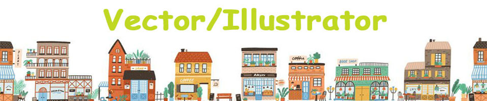
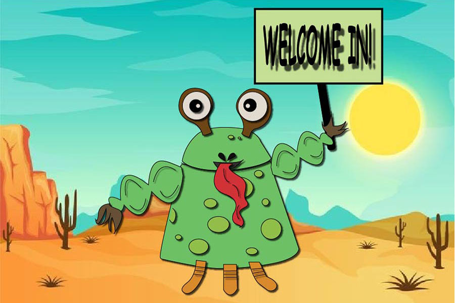

In this project we were asked to create a cute monster. I mostly created the character using the pen tool. I had a lot of fun creating the character that says hello to you with a sign in the middle of the desert.